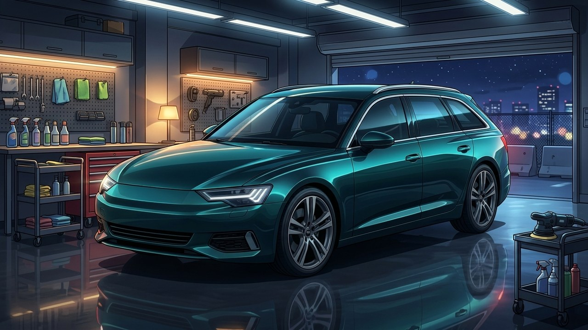

FC｜探求・カスタム系
FCIL：プラシーボを許さない数値とログの検証鬼
「なぜそうなるか」を数値とログで確かめずにいられない、検証型セッティング職人。
4文字アルファベット（FCIL）の意味
F｜機能・体験重視 (Function)
走り・使い勝手・メカニズムの実力や旅の体験に惚れる
C｜創る・弄る (Create)
カスタム・DIY・ショップ施工で自分色に仕立てる過程を楽しむ
I｜没入・孤高 (Immersion)
自分の世界観の中でマイペースに愛車・推し車と向き合いたい
L｜論理・データ (Logic)
数値・構造・歴史的背景・コスパなどの納得感を重視する
このタイプの本質・どんな車好き？
FCIL（プラシーボを許さない数値とログの検証鬼）のあなたは、曖昧な感覚論よりも「なぜそうなるのか」というメカニズムや数値、比較検証の裏付けに強く惹かれる知的な探求者です。
足回りの減衰、空気圧、音響特性、燃費や電費のログ、最新ソフトウェア更新（OTA）や制御ロジックなど、細かな調整で車の表情が変わる奥深さにワクワクするタイプ。普段は物静かでも、同じ解像度で検証話ができる相手に出会うと何時間でも楽しく語り合えます。
外見はさりげなくても中身に緻密なこだわりとデータの裏付けが詰まった車に、誰よりも深いリスペクトを抱きます。
あるある・生態ワード
プラシーボより検証
数値とデータの奥深さ
理屈が通るカスタムが好き
比較検証レポート必読
空気圧や足回りの変化に興味
同じ解像度なら3時間語れる
燃費・電費と数値ログ
外見はさりげなく中身は本気
ECU・OTA・制御の仕組み
最適解を探すのが楽しい
ネットの曖昧情報を疑う
メモやログを見るのが好き
一人でもくもく調べる
細部のセッティングに唸る
知的な車談義
納得して選びたい
イベント・オフ会・SNSでの立ち回り
雑談よりも、同じ車種や同じ関心領域の相手と1対1で濃い情報交換や検証トークをするのが一番楽しめます。
沼りポイント＆苦手なこと（地雷）
「なんか速くなった気がする！」というプラシーボ報告に「それ気温差では？」と心の中でツッコミがち。比較検証しすぎて買い物カゴにパーツが3ヶ月眠っています。